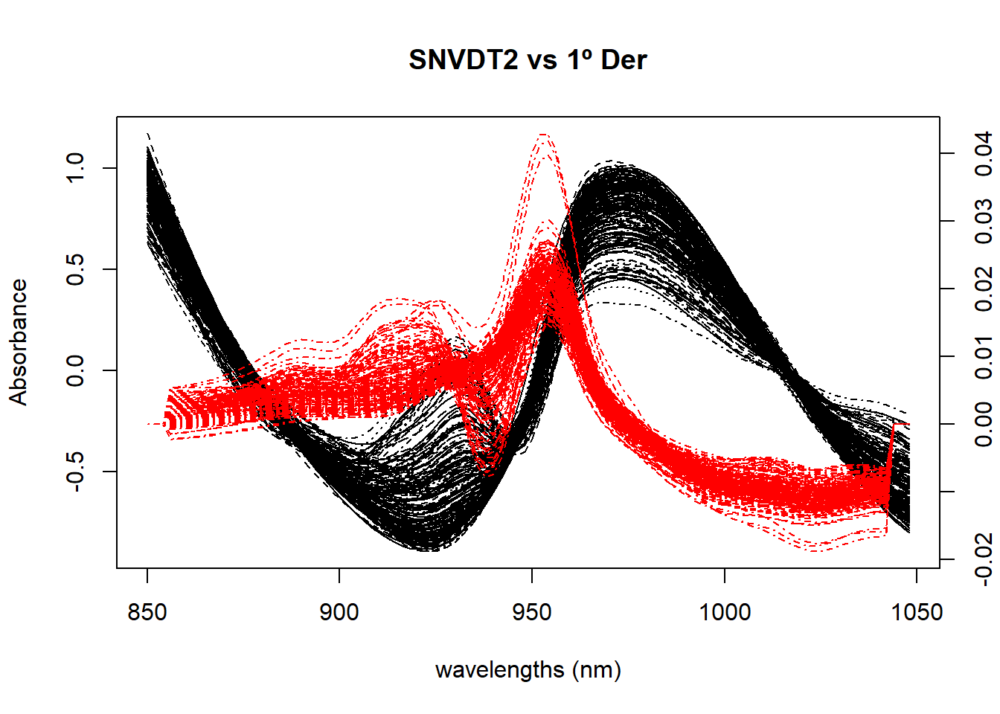
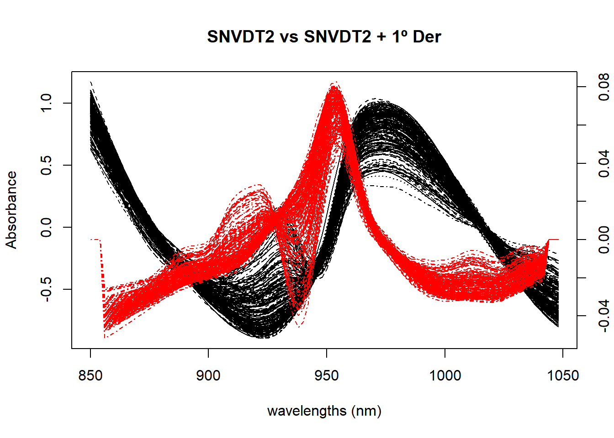
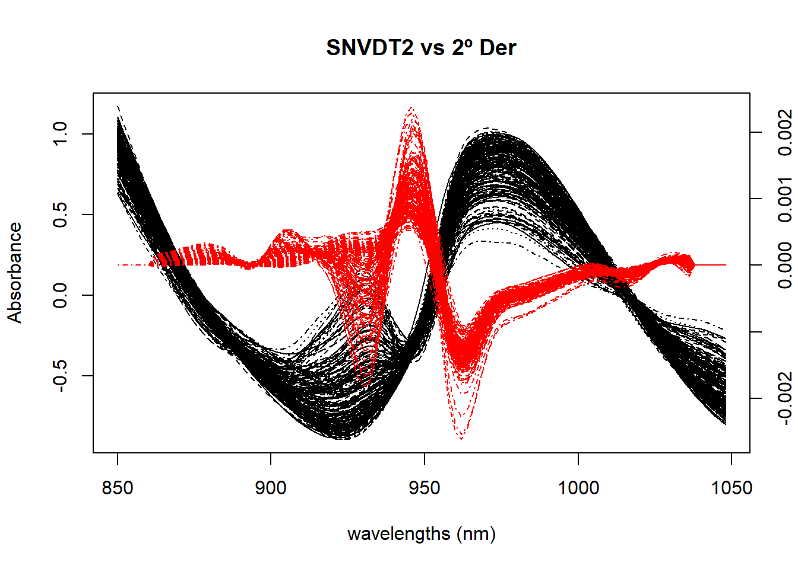
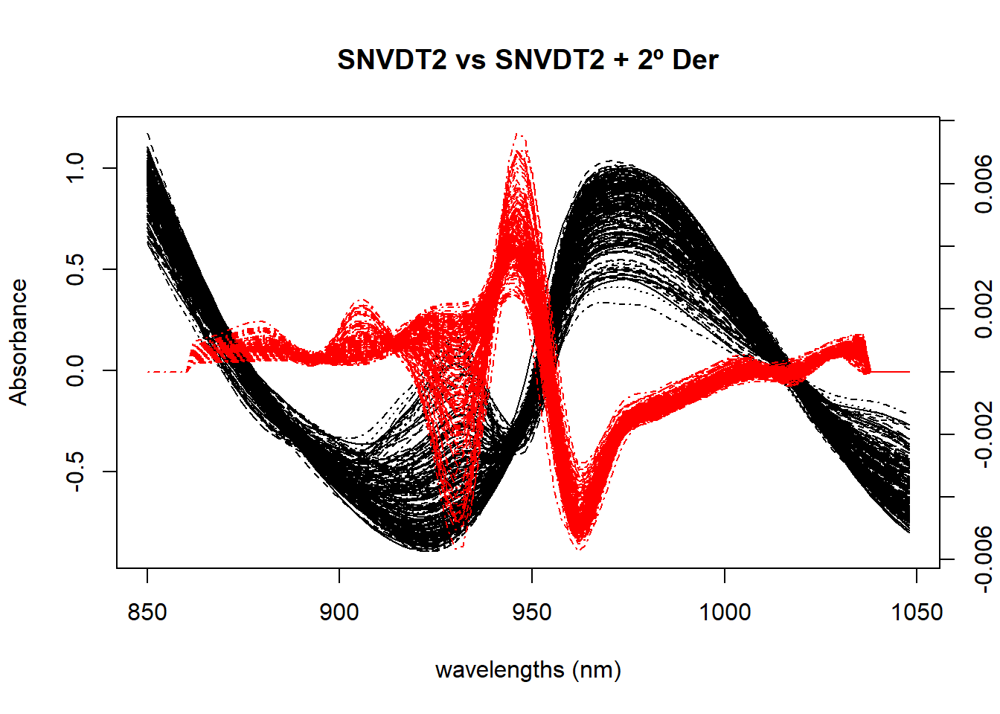
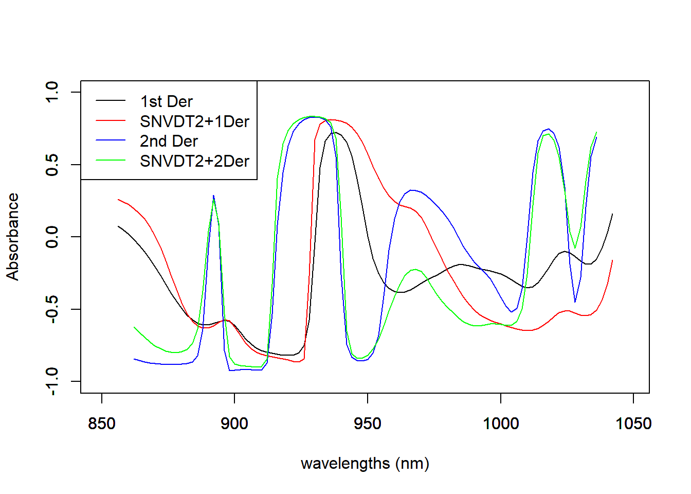
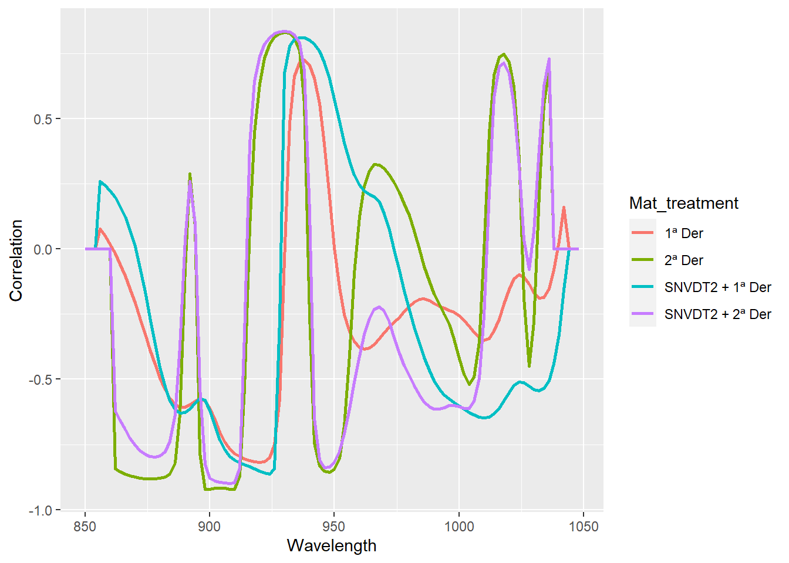

load("C:/BLOG/Workspaces/NIT Tutorial/NIT_ws6.RData")
library(tidyverse)
library(prospectr)
par(mar=c(5,4,4,2)+0.1)Let´s start by loading our workspace and the libraries we will use in this post:
We have seen some of the most popular scatter correction methods in the previous posts, and now, in this one, we will try the derivatives (first and second) alone and combined with SNV and the quadratic detrend.
First Derivative
We are use to see peaks and try to see at which wavelengths are the peaks and find out what type of bonds absorb at those wavelengths. Of course in the NIR bands, due to they are quite broad bands, the peaks are not so sharp as we would like to see them (like in the middle infrared), and everything became even worse as they combine with other neighbors bands forming overlapping bands even broader.
The derivatives improve the resolution, increasing the separation of the overlaping bands, but the cost is the difficulty to interpret them. In the case of the first derivative, the peak maximum change to a zero-crossing. Let´s use the {prospectr} package to calculate the first derivative of the meat raw spectra: The fuction we use is gapDer, where:
X = the raw spectra matrix (we could use absorp or tecator$spec)
m = order of the derivative (for the first derivative we use 1)
w = gap size (we will use 1)
s = segment size (space on both sides of the gap to average the absorbance values)
delta.wav = interval between data points (2 in this case)
Let´s calculate the first derivative alone and the combination of SNV and Detrend plus the first derivative:
#First derivative calculation
der1_spec <- gapDer(absorp, m = 1, w = 5, s = 1, delta.wav = 2)
#SNV and Detrend2 plus First Derivative
snvdt2der1_spec <- gapDer(tecator$sndt2_spec, m = 1, w = 5, s = 1, delta.wav = 2)Figure 1 compares the spectra treated with SNV plus Quadratic Detrend with the spectra of just the first derivative.
matplot(colnames(tecator$sndt2_spec), t(tecator$sndt2_spec), type = "l", xlab = "wavelengths (nm)", ylab = "Absorbance", main = "SNVDT2 vs 1º Der", col = "black", xaxt = "n")
par(new=TRUE)
matplot(colnames(der1_spec), t(der1_spec), type = "l",lty = 4,axes = FALSE, xlab = " ", ylab = " ", main = " ", col = "red", bty = "n")
axis(4)
axis(1)
Figure 2 compares the spectra treated with SNV plus Quadratic Detrend with the first derivative applied to the SNV+DT2 spectra.
matplot(colnames(tecator$sndt2_spec), t(tecator$sndt2_spec), type = "l", xlab = "wavelengths (nm)", ylab = "Absorbance", main = "SNVDT2 vs SNVDT2 + 1º Der", col = "black", xaxt = "n")
par(new=TRUE)
matplot(colnames(snvdt2der1_spec), t(snvdt2der1_spec), type = "l",lty = 4,axes = FALSE, xlab = " ", ylab = " ", main = " ", col = "red", bty = "n")
axis(4)
axis(1)
Second derivative
In the calculation of the second derivative the peak maximum becomes a peak minimum, creating some kind of shoulders on the sides so it is necessary to have this on mind when interpreting the spectra. The resolution of the bands change depending of the values of “w” and “s” we choose, if the values are lower the resolution increase and at the same time the noise, so it is necessary to find a compromise between this both elements.
Now let´s calculate the second derivative for the raw spectra and for the spectra treated with SNV+DT2 ( we have done this calculation in the previous post).
der2_spec <- gapDer(absorp, m = 2, w = 5, s = 1, delta.wav = 2)
snvdt2der2_spec <- gapDer(tecator$sndt2_spec, m = 2, w = 5, s = 1, delta.wav = 2)We have to prepare some code to match the wavelengths due that the derivatives reduce the wavelenth range on both extremes depending of the values of “w” and “s”.
Figure 3 compares the spectra treated with SNV plus Quadratic Detrend with the spectra of just the second derivative.
matplot(colnames(tecator$sndt2_spec), t(tecator$sndt2_spec), type = "l", xlab = "wavelengths (nm)", ylab = "Absorbance", main = "SNVDT2 vs 2º Der", col = "black", xaxt = "n")
par(new=TRUE)
matplot(colnames(der2_spec), t(der2_spec), type = "l",lty = 4, axes = FALSE, xlab = " ", ylab = " ", main = " ", col = "red", bty = "n")
axis(4)
axis(1)
Figure 4 compares the spectra treated with SNV plus Quadratic Detrend with the second derivative applied to the SNV+DT2 spectra.
matplot(colnames(tecator$sndt2_spec), t(tecator$sndt2_spec), type = "l", xlab = "wavelengths (nm)", ylab = "Absorbance", main = "SNVDT2 vs SNVDT2 + 2º Der", col = "black", xaxt = "n")
par(new=TRUE)
matplot(colnames(snvdt2der2_spec), t(snvdt2der2_spec), type = "l",lty = 4, axes = FALSE, xlab = " ", ylab = " ", main = " ", col = "red", bty = "n")
axis(4)
axis(1)
Checking the correlation with the protein parameter for the math-treatments calculated in this post
Figure 5 compares correlation spectra for the four different options we have tried in this post. Visually it is difficult to decide which one can be the best, but they can help us to see where are the wavelength ranges more associated to the protein in this case.
cor_prot_der1 <- cor(tecator$Protein, der1_spec)
matplot(colnames(der1_spec), t(cor_prot_der1), type = "l", xlab = "wavelengths (nm)", ylab = "Absorbance", main = " ", col = "black", ylim = c(-1.0, 1.0))
par(new = TRUE)
cor_prot_snvdt2der1 <- cor(tecator$Protein, snvdt2der1_spec)
matplot(colnames(snvdt2der1_spec), t(cor_prot_snvdt2der1), type = "l", xlab = " ", ylab = " ", main = " ", col = "red", ylim = c(-1.0, 1.0))
par(new = TRUE)
cor_prot_der2 <- cor(tecator$Protein, der2_spec)
matplot(colnames(der2_spec), t(cor_prot_der2), type = "l", xlab = " ", ylab = " ", main = " ", col = "blue", ylim = c(-1.0, 1.0))
par(new = TRUE)
cor_prot_snvdt2der2 <- cor(tecator$Protein, snvdt2der2_spec)
matplot(colnames(snvdt2der2_spec), t(cor_prot_snvdt2der2), type = "l", xlab = " ", ylab = " ", main = " ", col = "green", ylim = c(-1.0, 1.0))
legend("topleft", legend = c("1st Der", "SNVDT2+1Der", "2nd Der", "SNVDT2+2Der" ),
lty = 1, col = c("black", "red", "blue", "green"))
Let´s do it with ggplot2
We have already load tidyverse library at the beginning
cor_prot_with_der <- as.data.frame(rbind(cor_prot_der1, cor_prot_snvdt2der1, cor_prot_der2, cor_prot_snvdt2der2))
#replace all NA values with zero
cor_prot_with_der <- cor_prot_with_der %>%
replace(is.na(.), 0)
cor_prot_with_dt <- cor_prot_with_der %>%
mutate(Mat_treatment = as.factor(c("1ª Der", "SNVDT2 + 1ª Der",
"2ª Der", "SNVDT2 + 2ª Der")))
cor_prot_with_dt %>%
pivot_longer(cols = c(1:100), names_to = "Wavelength", values_to = "Correlation") %>%
mutate(Wavelength = as.integer(Wavelength)) %>%
ggplot(aes(x = Wavelength, y = Correlation, group = Mat_treatment, col = Mat_treatment)) +
geom_line(size = 1)
Let´s see in a diagram what we have seen until this post
flowchart LR A[Raw Spectra] --> B(SNV) A --> C(Detrend only) A --> D[SNV & linear Detrend] A --> E[SNV & Quadratic Detrend] D --> F[First Derivative] D --> G[Second Derivative] A --> H[MSC] A --> I[First Derivative] A --> J[Second Derivative]
We have several options now to develop models and see which one gives the better statistics, of course there are more math treatments we can try but we stop in this tutorial with the derivatives and in the next ones we will check the different options to find outliers.
Finally we add the new math treatments to the tecator database to use it in the coming posts:
tecator$der1_spec <- der1_spec
tecator$der2_spec <- der2_spec
tecator$snvdt2der1_spec <- snvdt2der1_spec
tecator$snvdt2der2_spec <- snvdt2der2_specand save the dataframe for future use:
save.image("C:/BLOG/Workspaces/NIT Tutorial/NIT_ws7.RData")